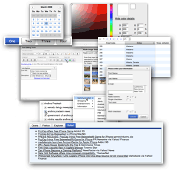

<?php 
$title="Yahoo! UI Library: Understanding YUI Skins";
$section="skinning";
$highlightSyntax=true;
include "../../inc/header.inc";
?>

<div id="yui-main">
<div class="yui-b">

<style type="text/css">
#ygma {margin-bottom:1em;}
h1 {font-size:175%;}
h2 {font-size:122%;border-width:0;}
h2.byline {font-size:100%;text-align:left;margin-top:2em; margin-bottom: 2em;font-weight:normal;}
h3 {font-size:100%;}
h1,h2,h3,p,ul {margin-bottom:1em;}
h1 {margin-top:0; padding-top:0;}
h2 {margin-top:0; padding-top:.5em;}
ul {margin-left:1.5em;margin-bottom:1.5em;}
blockquote {margin:1em 2em 1em 2em;font-style:italic;}
li h3 {margin-bottom:0;}
abbr {cursor:help;}
.gloss {color:#E76300;font-weight:bold;}
</style>



<h1>Understanding YUI Skins</h1>

<h2 class="byline">
By Nate Koechley<br>
Yahoo! Inc.<br>
August 1, 2007
</h2>


<p>The visual presentation of YUI controls is defined with CSS. YUI version 2.3.0 includes a new, cohesive, visual look and feel, or skin. We call this skin "Sam" as a thank you to talented designer Sam Lind for creating it and working with the YUI team to see it implemented.</p>

<h2 id="using-yui-skins">Using YUI Skins</h2>

<p>There are two steps to using YUI skins. First, add the skin's class name to your document, or regions of your document. Second, link in the skin's CSS file.</p>

<p>CSS rules for skins are "namespaced" under contextual selectors based on the skin name, in this case "yui-skin-sam." You can apply the skin to the full document or just to specific regions or controls.</p>

<p>To apply the Sam Skin to an entire page, add a "yui-skin-sam" class value to your body element:</p>

<textarea name="code" class="HTML" cols="60" rows="1">
<body class="yui-skin-sam">
</textarea>

<p>To apply the skin to a region or single control, wrap just that portion of the page:</p>

<textarea name="code" class="HTML" cols="60" rows="3">
<div class="yui-skin-sam">
	<span class="yuibutton"></span>
</div>
</textarea>

<p>You'll also need to link in the skin's CSS. As we'll see below, the optimized CSS file for a skin lives within the skin's shared assets folder, and within the component-specific skin folder:</p>

<ul>
	<li><code>/build/assets/skins/sam/button.css</code></li>
	<li><code>/build/button/assets/skins/sam/button.css</code></li>
</ul>

<h3 id="backward-compatibility">Backward Compatibility</h3>

<p>Even as we add new functionality and visual skins to YUI we intend to preserve compatibility&mdash;including at the presentational CSS layer&mdash;throughout the 2.x lifecycle. Because all the rules for the skin are namespaced under a class value that you explicitly add to your document, we will continue to support the pre 2.3.0 "no-skin" presentation as the default.</p> 

<h2 id="two-flavors-of-css">YUI's Two Flavors of CSS</h2>

<p>Each skin has two CSS files per control: one for core functionality and one for visual presentation. Core CSS defines essential functionality and structure. Presentational CSS defines cosmetics such as color, imagery and typography. Without core CSS the controls stop working; without presentational CSS they simply look different.</p>

<h2 id="no-skin">No-skin Resources</h2>

<p>The file structure and resource list for YUI Button's default presentation are unchanged from pre 2.3.0 versions. The script lives within the component's directory under /build/. The CSS and image files are unchanged within /assets/ under the component.</p>

<ul>
	<li><code><strong>/build/button/</strong>button-beta.js</code></li>
	<li><code><strong>/build/button/</strong>button-beta-debug.js</code></li>
	<li><code><strong>/build/button/</strong>button-beta-beta-min.js</code></li>
	<li><code><strong>/build/button/assets/</strong>button.css</code></li>
	<li><code><strong>/build/button/assets/</strong>button-core.css</code></li>				
	<li><code><strong>/build/button/assets/</strong>background.png</code></li>
	<li><code><strong>/build/button/assets/</strong>splitarrow.gif</code></li>
</ul>

<p>Because the default no-skin is primarily core instead of presentational, and because we want to support the historic default presentation out of the box, in many cases the [component]-core.css is intentionally blank and the entire CSS for no-skin lives in [component].css. Even when empty, we've included the empty *-core.css for going-forward consistency.</p>

<h2 id="skin-sam">Sam Skin Resources</h2>

<p>Here is the file structure and resources list for YUI Button's Sam skin. The skinned version of a component shares script file(s) and core CSS with the no-skin version, but brings its own presentational CSS and image files. These resources live within a skin and skin-name directory within the components assets directory:</p>

<ul>
	<li><code>/build/button/button-beta.js</code></li>
	<li><code>/build/button/button-beta-debug.js</code></li>
	<li><code>/build/button/button-beta-beta-min.js</code></li>
	<li><code><strong>/build/button/assets/skins/sam/</strong>button.css</code></li>
	<li><code><strong>/build/button/assets/skins/sam/</strong>button-skin.css</code></li>
	<li><code><strong>/build/button/assets/skins/sam/</strong>background.png</code></li>
	<li><code><strong>/build/button/assets/skins/sam/</strong>splitarrow.gif</code></li>
</ul>

<p>Note that in the above list <code>button.css</code> is the result of concatenating and minimizing <code>/build/button/assets/skins/sam/button-skin.css</code> and <code>/build/buttons/assets/button-core.css</code>.</p>

<h2 id="shared-skin-resources">Shared Skin Resources</h2>

<p>Resources shared across a skin, such as the master image sprite, live in a shared directory:</p>

<ul>
	<li><code>/build/assets/skins/sam/sprite.png</code></li>
</ul>

<h2 id="minimized-skin-resources">Minimized, Concatenated Skin Resources</h2>

<p>Though skins are developed as two CSS files during development, we concatenate and minimize them for production use. They live in this optimized form in the top-level assets folder alongside the shared image resources:</p>

<ul>
	<li><code>/build/assets/skins/sam/button.css</code></li>
	<li><code>/build/assets/skins/sam/calendar.css</code></li>
	<li><code>/build/assets/skins/sam/sprite.png</code></li>
</ul>

<h2 id="the-uber-skin-file">The Uber Skin File</h2>

<p>In addition to a rolled-up CSS file for each component we provide a rolled-up CSS file for the complete library:</p>

<ul>
	<li><code>/build/assets/skins/sam/skin.css</code></li>
</ul>

<h2 id="skinning-examples">Skinning Examples</h2>

<p>Though this article provides an overview of our approach to skinning YUI and the resources involved, each component's roster of functional examples includes an example of skinning that component.</p>

<h2 id="extending-and-creating-skins">Extending and Creating Skins</h2>

<p>Sam Lind created a beautiful and efficient skin for YUI. The color palette is small and efficiently reused. A majority of the image assets are shared across the library -- gradients, icons, and arrows, and are contained in a single, optimized, ~4k image sprite; a small set of additional images that couldn't be sprited live flat in the same <code>build/assets/skins/sam</code> directory.</p>

<p>To modify and/or extend the Sam skin, explore the assets in that shared directory. Or copy that directory and use it as a starting point for entirely new skins.</p>

<p>We plan to offer additional skins in the future, and we invite you to create new skins as well.</p>


	<h2 id="support">Support &amp; Community</h2>
	<p>The YUI Library and related topics are discussed on the on the <a href="http://groups.yahoo.com/group/ydn-javascript/">ydn-javascript</a> mailing list.</p>

	<form method="get" action="http://groups.yahoo.com/subscribe/ydn-javascript">
	<table cellspacing="0" cellpadding="2">
		<tr>
			<td align="right" width="50%"><input type="text" name="user" value="enter email address" size="20"></td>
			<td align="left"><input type="image" border="0" alt="Click here to join ydn-javascript" name="Click here to join ydn-javascript" src="http://us.i1.yimg.com/us.yimg.com/i/ydn/yuiweb/img/joinbtn.gif"></td>
		</tr>
	</table>
	</form>

    <p>In addition, please visit the <a href="http://yuiblog.com">YUIBlog</a> for updates and articles about the YUI Library written by the library's developers.</p>
</div>
</div>

<?php include "../../inc/side.inc" ?>
<?php include "../../inc/footer.inc" ?>

